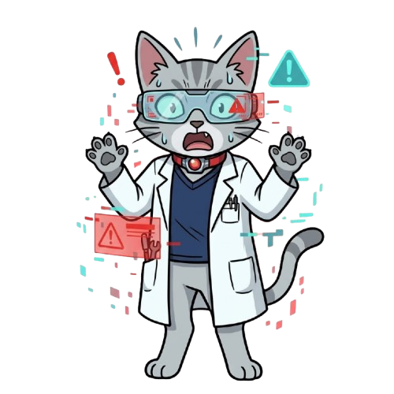

PROJECT V
바이러스 연구소 탈출기

AI 두잇 (DoIt) 비상 상황
"경고. A.Q.U.A 연구소 내 고위험 병원체 유출 감지.
전 구역이 차단되었습니다. 수석 연구원님, 신속히 백신을 개발하여 탈출하고 생태계 붕괴를 막아야 합니다."
B1 보안 서버실
[생명 시스템의 정보 흐름]
미지의 DNA 염기서열 [ T - A - C - G ]가 발견되었습니다.
보안 시스템을 해제하려면 이 유전 정보를 RNA로 올바르게 전사(Transcription)해야 합니다.
미지의 DNA 염기서열 [ T - A - C - G ]가 발견되었습니다.
보안 시스템을 해제하려면 이 유전 정보를 RNA로 올바르게 전사(Transcription)해야 합니다.

AI 두잇 (DoIt)
"우측 상단의 '연구 일지'를 확인하여 RNA 염기 결합 규칙을 확인하십시오."
B2 백신 합성 실험실
[화학 변화와 에너지 출입]
백신을 담을 무균 앰플을 만들기 위해 질산 은(AgNO₃) 수용액에 구리(Cu)선을 넣었습니다.
반응이 일어날 때, 전자를 잃고 "산화"되는 물질은 무엇입니까?
백신을 담을 무균 앰플을 만들기 위해 질산 은(AgNO₃) 수용액에 구리(Cu)선을 넣었습니다.
반응이 일어날 때, 전자를 잃고 "산화"되는 물질은 무엇입니까?

AI 두잇 (DoIt)
"금속의 반응성을 고려하십시오. 구리는 은보다 이온이 되려는 경향(반응성)이 훨씬 큽니다."
B3 최고 보안 통제실
[지질 시대의 환경 변화와 생물다양성]
연구소 내부 환경이 과거 지질 시대의 대멸종 시기처럼 급변했습니다.
방역 속에서 살아남은 일부 병원체가 자연선택되어 강력한 내성 변이로 진화하고 있습니다.
더 큰 전파를 막을 최종 대응 방안을 결재하십시오.
연구소 내부 환경이 과거 지질 시대의 대멸종 시기처럼 급변했습니다.
방역 속에서 살아남은 일부 병원체가 자연선택되어 강력한 내성 변이로 진화하고 있습니다.
더 큰 전파를 막을 최종 대응 방안을 결재하십시오.
AI 두잇 (DoIt)
"가혹한 약물 환경에 적합한 개체들이 살아남는 '자연선택'이 발생했습니다. 수석 연구원님의 윤리적 판단이 필요합니다."

AI 두잇 (DoIt)
"모든 시스템 안정화 완료. 연구원님의 선택은 향후 인류 생명과학 발전과 안전에 거대한 이정표로 기록될 것입니다."